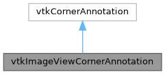

|
MUSICardio 4.2
MUSICardio application created by Inria Epione, IHU LIRYC and Université de Bordeaux
|
Loading...
Searching...
No Matches
|
MUSICardio 4.2
MUSICardio application created by Inria Epione, IHU LIRYC and Université de Bordeaux
|
#include <vtkImageViewCornerAnnotation.h>


Public Member Functions | |
| vtkTypeMacro (vtkImageViewCornerAnnotation, vtkCornerAnnotation) static vtkImageViewCornerAnnotation *New() | |
| void | SetImageView (vtkImageView *arg) |
| vtkGetObjectMacro (ImageView, vtkImageView) int RenderOpaqueGeometry(vtkViewport *viewport) | |
Protected Member Functions | |
| virtual void | TextReplace (vtkImageActor *imageActor, vtkImageMapToWindowLevelColors *) |
Notes on Nicolas Toussaint changes
A) RenderOpaqueGeometry() we actually absolutely need to re-write this method in order to update properly the information as the mouse move over the window.